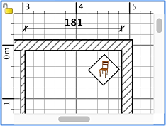
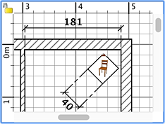

To draw dimensions, you must first choose Plan > Create dimensions or select the Create dimensions tool.
 Create
dimensions tool Create
dimensions tool
Each dimension is created in three clicks in the home plan:
- the first click points out the start point of the new
dimension,
- the second click
points out its end point,
- the third click helps you to point out the size of the extension lines drawn at each end of the created dimension
line. If you don't move the mouse between the second and the third click, the new dimension won't have any extension
line.
At any time you may press the Escape key to cancel the creation of the current dimension.
During the second step, each mouse move updates in the plan the new dimension size and the length it displays.
|  |
 |
Creating a dimension
without extension lines |
Creating a dimension
with extension lines |
To end
the drawing of dimensions, choose Plan > Select or select the Select tool.
 Select tool Select tool
|